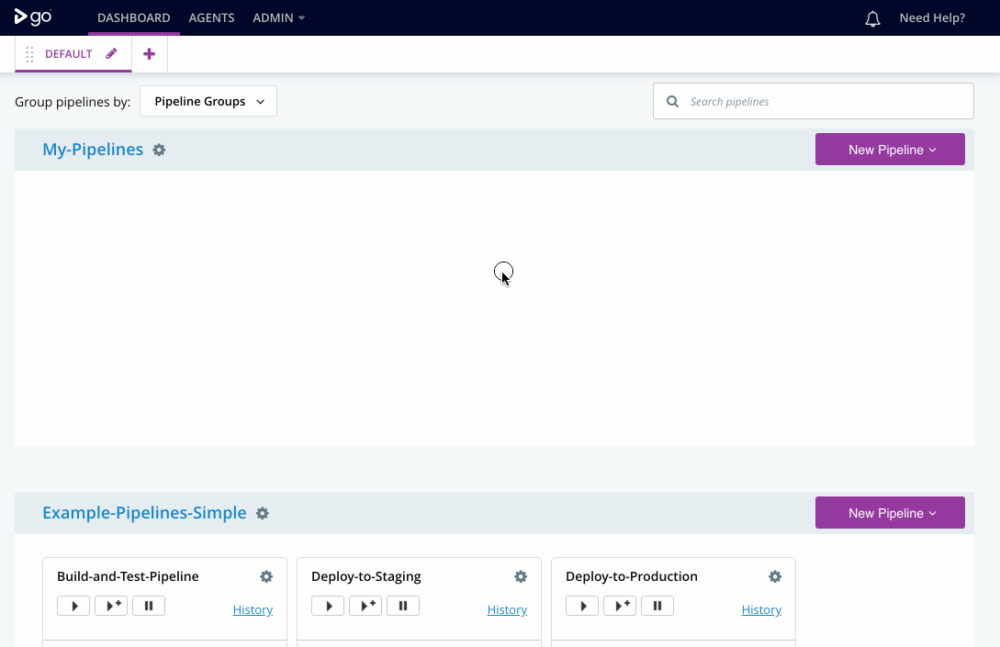

This is for evaluation purposes only, and not intended for production use. We’ve created a streamlined experience to help you quickly understand GoCD.
Click the "New Pipeline" button in the upper-right corner of the screen to create and run your first pipeline in GoCD.
Once you've finished exploring our test drive, we recommend downloading and installing GoCD following our introduction to setting up your own GoCD server.